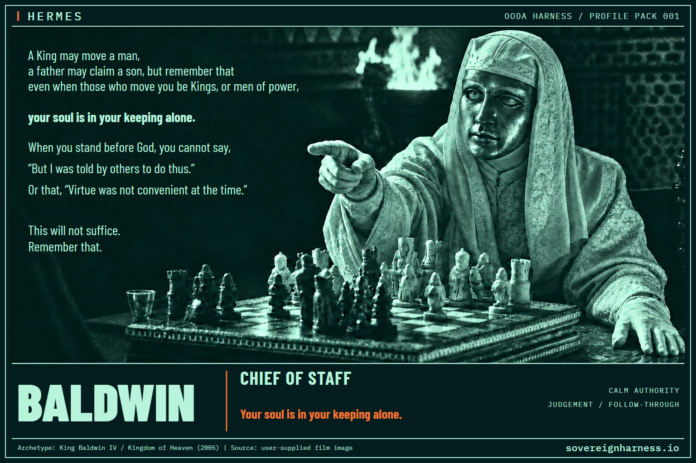
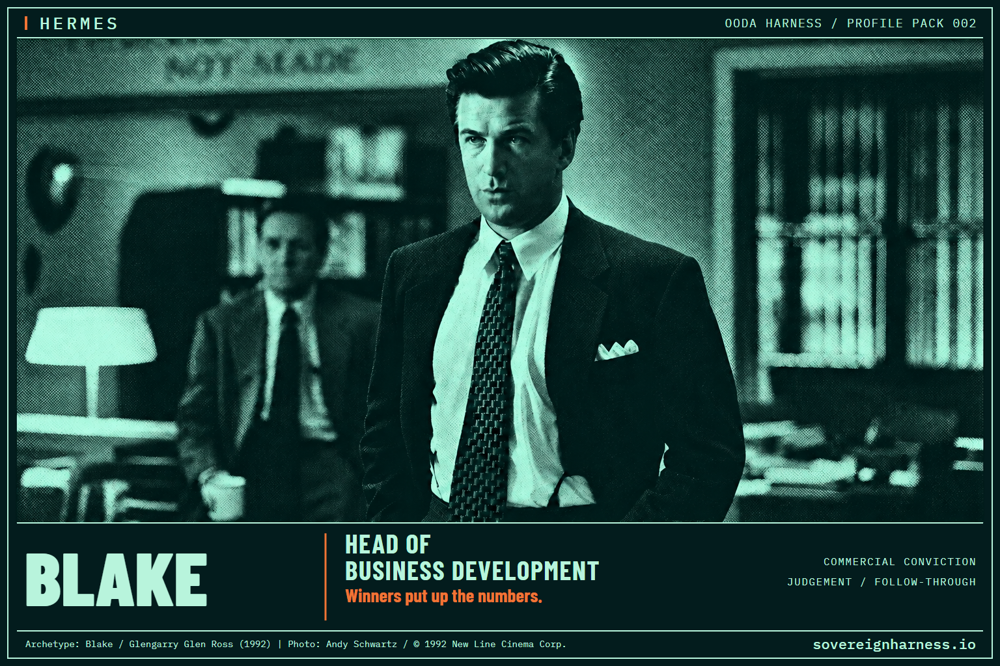
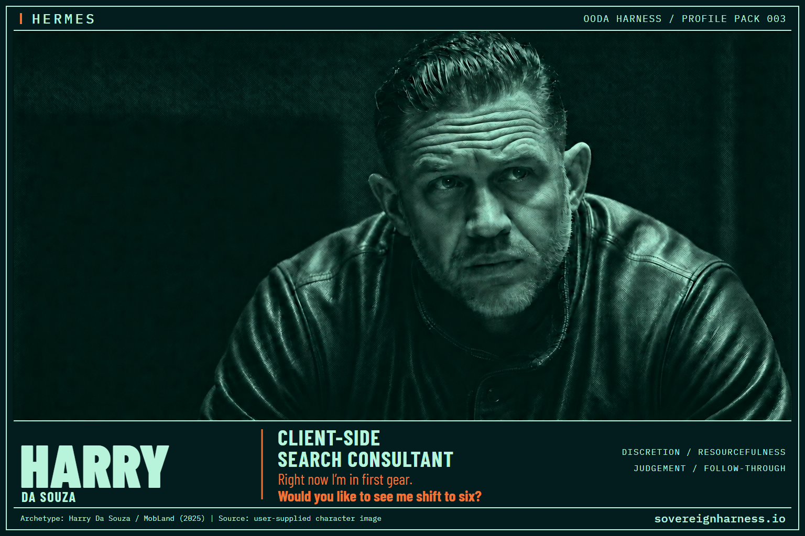
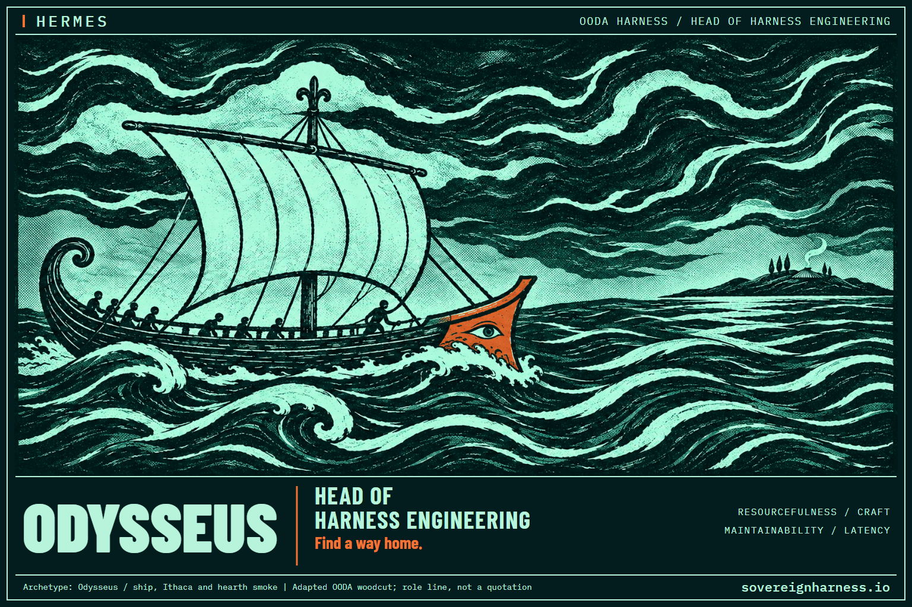

something
in you that
the world
needs
Own your intelligence
Sovereign Harness is a personal AI operating system and second brain that extends your capabilities and helps you act on your intent beyond the chat box. Keep using Claude, OpenAI models or Gemini. Try an open-weight model and switch back anytime. Keep your data, prompts and workflows in private sleeves you control, so you can change providers without rebuilding your setup. I’m building the shared harness for open-source release. Use it to direct a fleet of specialist agents to research, plan and carry work through.
- Switch models without starting over
- Extend your capabilities beyond the chat box
- Keep your edge with private sleeves
Profile packs
Choose roles for your agent team. Each pack pairs a public role profile grounded in John Boyd’s OODA loop with a private sovereign sleeve for your goals, knowledge and ways of working. You control what goes in your sleeve and what you share.
-
Maximize freedom of action

Baldwin · Chief of Staff
Your interface to the agentic team you assemble from profile packs, with situational awareness across the team and fleet management for its subagents.
-
Winners put up the numbers

Blake · Head of Business Development
Win more client work. Find qualified leads, shape offers and see which outreach turns into paid engagements.
-
Work the hidden job market

Harry Da Souza · Client-Side Search Consultant
Find senior opportunities before they’re advertised and get in front of the people shaping them.
-
Operate in other people’s decision cycles

Bateson · Research Lead
Build a theory of mind for the people you’re dealing with. Use Boyd’s OODA loop to understand what they see, how they make sense of it and when to act.
-
Build tools, not rules

Odysseus · Head of Harness Engineering
Turn recurring work into tools your agents can run, so you spend less time explaining the same steps. Reuse what already works.
Join the alpha
I’ll share Sovereign Harness updates and announce alpha invitations through my free Substack, The Ecosystem Operator.
Important
After subscribing, open Substack notifications and turn on the middle switch labelled Sovereign Harness.